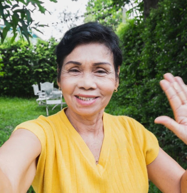
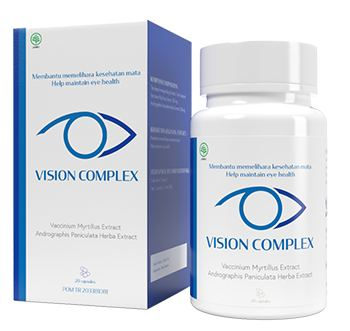

Anda akan memulihkan penglihatan Anda dalam 28 hari - efeknya dikonfirmasi oleh penelitian medis independen.
(Solusi revolusioner hanya untuk usia 25-80 tahun - jangan membaca lebih muda)
Halo, nama saya Profesor Rahmat Prasetyo, saya seorang ilmuwan dan ahli di bidang biologi molekuler. Di halaman ini saya ingin memperkenalkan Anda pada pencapaian terbesar dalam hidup saya, di mana saya telah menerima beberapa penghargaan bergengsi. Saya telah mengembangkan obat alami yang memungkinkan siapa saja untuk sepenuhnya memulihkan penglihatan mereka dalam 28 hari, tanpa kacamata dan operasi. Cara revolusioner ini hanya berhasil jika usia Anda antara 25-80 tahun. Saya akan menjelaskan cara kerjanya!
Anda tidak perlu mengubah gaya hidup untuk mendapatkan:
- Pemulihan penglihatan dalam 28 hari tanpa operasi, terlepas dari apa yang menyebabkan penglihatan Anda menurun
- Peningkatan ketajaman visual setelah minggu pertama menggunakan metode ini dan pemulihan proses metabolisme di bola mata sebesar 50%
- Penguatan jaringan otot dan pembuluh darah mata, menghilangkan kemerahan, bengkak, gejala berbagai penyakit
- Pengurangan ketegangan otot mata, normalisasi nutrisi retina dan jaringan lain
- Mencegah risiko kehilangan penglihatan dan penyakit mata lainnya sebesar 89%, memperlambat perubahan penglihatan terkait usia
- Secara bertahap, Ukuran Lensa kacamata anda akan berkurang
Tidak peduli berapa usia Anda, 25 atau 80, seberapa buruk penglihatan Anda dan berapa lama Anda telah berusaha untuk mengatasi masalah tersebut. Tidak masalah jika penglihatan Anda yang buruk adalah keturunan, akibat dari gaya hidup, pekerjaan, cedera atau pemulihan. Tidak masalah jika Anda memiliki sedikit penyimpangan atau masalah penglihatan yang serius. Bahkan jika ratusan upaya untuk menjaga kesehatan mata tidak berhasil dan Anda hanya kecewa, karena Anda menganggap semua ini sia-sia. Berkat metode saya, Anda akan dapat memulihkan ketajaman visual hanya dalam 28 hari dan akhirnya mencapai kesehatan mata Anda. Tanpa usaha, tanpa operasi, dan tanpa kacamata.
Anda bisa mendapatkan semua ini tanpa mengunjungi dokter mata, koreksi laser, penggunaan obat tetes, kacamata, lensa, yang akan mengakibatkan kekecewaan setiap saat. Dan Anda dapat menghemat ratusan ribu rupiah dalam prosesnya. Jadi pastikan untuk membaca apa yang saya tulis untuk Anda.
Itulah mengapa metode saya merupakan alternatif yang sangat baik untuk operasi laser dan metode lain untuk orang berusia 25 hingga 80 tahun:
-
Ini secara alami akan memulihkan penglihatan Anda
Jika Anda memakai kacamata atau lensa, Anda tidak akan pernah mencapai tujuan untuk pemulihan. Alat tersebut melakukan semua pekerjaannya, bukannya merangsang mata Anda untuk bekerja lebih baik. Ini sederhana dan jelas. Saat Anda memakai kacamata atau lensa, itu bukan mata Anda. Anda bertindak melawan visi yang baik secara alami. Dengan cara ini Anda tidak akan dapat meningkatkan penglihatan Anda. Metode saya meregenerasi struktur mata dan mengembalikan kualitas penglihatan alami.
-
Ini memiliki efek yang cepat dan sangat efisien
Alih-alih memakai kacamata dan lensa selama sisa hidup Anda, atau mengambil risiko memotong kornea dengan laser, yang dapat menyebabkan konsekuensi yang tidak dapat diubah, Anda dapat menyesuaikan tubuh Anda ke tingkat pemulihan penglihatan yang lain. Tidak ada ketidaknyamanan karena kacamata, tidak ada peradangan karena lensa dan tidak ada risiko untuk kesehatan Anda. Intinya adalah formula tersebut secara tepat menyesuaikan mekanisme regenerasi kornea dan retina pada orang berusia 25 hingga 80 tahun.
-
Tidak perlu mengubah gaya hidup
Anda dapat terus menggunakan ponsel dan komputer Anda secara aktif, membaca dalam gelap dan ini tidak akan memengaruhi hasil perawatan dengan cara apa pun. Bukan gaya hidup yang mencegah Anda memulihkan penglihatan Anda, tetapi bagaimana organ visual Anda bekerja dan seberapa terlindunginya mereka.
-
Pemulihan otomatis dan perlindungan penglihatan 24 jam sehari
Formula saya melindungi mata Anda dari faktor lingkungan yang merugikan, memulihkan sel-sel mata, menghilangkan ketegangan otot mata, secara dramatis mengurangi risiko kehilangan penglihatan total, glaukoma, dan penyakit lainnya.
-
Meredakan masalah penglihatan sekali dan untuk semua
Metode saya bekerja selaras dengan fungsi alami sistem visual orang berusia 25 hingga 80 tahun. Ini menghilangkan penyebab kehilangan penglihatan. Oleh karena itu, penglihatan Anda tidak akan memburuk lagi setelah menjalani masa pemulihan.
-
Hemat ratusan ribu rupiah
Alih-alih menghabiskan uang untuk dokter, koreksi laser, dan lensa, Anda dapat menggunakan metode saya. Bayar sekali selama 1 bulan dan perbaiki masalah penglihatan anda.
Saya telah mengembangkan metode alami untuk orang berusia 25 hingga 80 tahun, yang menghilangkan penyebab kehilangan penglihatan dan secara otomatis mengembalikan kemampuan alami untuk melihat
Berkat itu, Anda akan secara bertahap dan tepat dalam meningkatkan ketajaman visual, Memulihkan cacat visual dan melindungi kesehatan Anda... Anda akan melupakan ketidaknyamanan dan sakit kepala karena kacamata, mata kering dan iritasi karena lensa. Anda juga akan melupakan situasi memalukan dan konyol yang sering terjadi karena penglihatan yang buruk.
Penglihatan yang buruk dan mata yang lelah tidak mungkin menimbulkan kesan yang menyenangkan dan karena kebiasaan menyipitkan mata, risiko munculnya kerutan dini di wajah meningkat secara signifikan. Di kereta bawah tanah, di jalan, di universitas, di tempat kerja - hampir di mana-mana kita perlu melihat detail kecil, wajah orang, membaca teks. Agar gambar menjadi sejelas mungkin, ketajaman visual harus sesuai dengan setidaknya 100%. Saat itulah kita melihat dunia di sekitar kita.
Berkat metode saya, Anda akan meningkatkan penglihatan Anda hingga 98% dalam 28 hari. Anda akan dapat melihat dunia dengan mata yang sehat! Akhirnya, Anda tidak akan dapat melihat label harga pada produk, rambu-rambu jalan dan wajah orang, Anda akan terlihat lebih percaya diri dan tidak membatasi diri Anda dalam hal-hal yang tidak dapat Anda lakukan karena penglihatan yang buruk… Dan semua itu karena saya berhasil mengembangkan formula mikromolekul khusus yang mengurangi penyebab kehilangan penglihatan dan bekerja 24 jam, secara otomatis meregenerasi sel-sel mata yang rusak. Bagaimana saya melakukannya?
Saya ingin membantu ibu saya menghindari kehilangan penglihatan dikemudian hari
Menurut penelitian terbaru, setiap sepertiga penduduk memiliki masalah penglihatan. Ini adalah masalah besar bagi semua orang. Gangguan penglihatan tidak hanya mempengaruhi kualitas hidup dan kesehatan, tetapi juga daya tarik, kecantikan, kepercayaan diri dan persepsi orang lain di sekitar kita. Penglihatan yang buruk tidak hanya menyebabkan peningkatan risiko terkena strabismus, glaukoma atau kebutaan. Ini juga merupakan penyebab ketidaknyamanan yang memperumit kehidupan sehari-hari, seperti sakit mata, terbakar, kelelahan mata. Sayangnya, ibu saya juga memiliki penglihatan yang sangat buruk ...
Di masa mudanya, dia memiliki penglihatan yang sangat baik, dia bekerja sebagai akuntan sepanjang hidupnya. Selama bertahun-tahun, dia mulai membedakan angka dan huruf dengan buruk. Segera dia harus memakai kacamata, tetapi dia masih terus bekerja. Kacamata telah menjadi sumber ketidakpastian yang besar baginya. Terlepas dari kenyataan bahwa Ayah mencintainya apa adanya, sangat terlihat bahwa penggunaan kacamata secara paksa sangat mengecewakannya. Itu membuatnya lelah baik secara fisik maupun mental.
Ibuku tidak bisa terbiasa dengan penampilannya. Itu membuatnya marah, tetapi tidak ada uang untuk seorang ahli bedah yang baik. Suatu hari ayah saya memberi tahu saya bagaimana dia melemparkan kacamatanya ke dinding dengan histeris: “Saya bahkan tidak bisa melihat dengan baik dengan kacamata! Saya terlihat konyol dan saya tidak bisa bekerja lagi!” dia berteriak, terisak. Dia membanting pintu dan mengunci dirinya di kamar tidur.
Yang terburuk belum datang. Keadaan Ibu semakin parah. Dia tidak bisa melihat apa yang ada di tangannya, tidak bisa bekerja lagi, dan tidak mengenali wajah orang. Dokter mengatakan itu kehilangan penglihatan progresif. Sejujurnya, yang dia katakan hanyalah, "Jika Anda tidak menjalani operasi, Anda tidak akan menyelamatkan penglihatan Anda." Operasi semacam itu menelan biaya ratusan ribu rupiah. Dia telah kehilangan semua harapan. Saya mulai membeli beberapa obat pil dan melakukan latihan mata, tetapi itu tidak membantu. Dia kehilangan penglihatannya setiap hari. Dia semakin kecewa. Tidak hanya matanya yang sakit, dia dengan cepat kehilangan kemampuan untuk melihat.
Bagaimana menemukan obat untuk penglihatan yang buruk?
Saya harus membantu ibu saya untuk memulihkan penglihatannya yang tajam, suasana hati yang baik dan, yang paling penting, kesehatan yang baik. Saya ingin dia menyingkirkan obsesi melepas kacamatanya dan menjadi bahagia lagi, melihat dunia yang sangat dia cintai ini. Saya berpikir dalam hati: "Wow, Anda seorang ilmuwan! Biologi dan kimia siap membantu Anda. Anda telah mengembangkan banyak metode untuk mengobati berbagai penyakit. Sekarang lakukan sesuatu untuk memulihkan penglihatan yang jernih!" Saat itulah saya memulai penelitian saya ...
Saya telah melakukan penelitian laboratorium intensif selama lebih dari setahun dan telah menguji berbagai kombinasi bahan aktif. Saya hanya ingin mencatat bahwa semuanya 100% alami dan aman untuk tubuh. Pengetahuan ilmiah, kerja keras, dan sedikit keberuntungan dengan cepat mengarah pada kesuksesan — Saya telah mengembangkan formula mikromolekul unik untuk meningkatkan penglihatan. Saya segera mengirimkannya untuk pengujian dalam skala yang lebih besar. Efektivitasnya telah dikonfirmasi oleh pusat penelitian utama di Eropa dan Amerika Serikat! Selama pengujian, formula saya secara alami membantu para sukarelawan untuk memulihkan ketajaman visual rata-rata 98% dalam 1 bulan.
Ibu saya merasa lebih baik setelah menggunakan formula saya. Dia senang melihat wajah orang dan dunia di sekitarnya dengan sempurna, dan tidak lagi merasa canggung. Dan ini baru permulaan. Setelah minggu pertama, dia sudah membaca tanpa kacamata. Dia penuh energi dan telah kembali ke pekerjaan favoritnya lagi. “Rahmat, rasanya dunia berkacamata dan dunia tanpa kacamata adalah dua realitas yang berbeda,” teriaknya girang sambil membuang kacamata itu ke tempat sampah.
Tanpa koreksi laser, dia mencapai penglihatan yang sempurna dan menyingkirkan risiko kebutaan dalam 2 bulan
Kami tidak percaya penglihatan mata ibu semakin baik dan lebih baik setiap hari. Penglihatannya pulih dengan sangat cepat. Setelah 2 bulan, ibu saya sangat senang dan berkata: "Rahmat, saya memiliki penglihatan yang sangat baik lagi, seperti di masa muda saya! Anda menemukan obatnya! Ini akan membantu banyak orang! Terima kasih banyak untuk itu."
Berkat formula saya, Ibu terhindar dari risiko kehilangan penglihatan hanya dalam 2 bulan. Penglihatannya dipulihkan secara otomatis, tanpa operasi dan tanpa latihan mata. Formula ini telah memulihkan struktur mata yang rusak dan menghilangkan ketidaknyamanan yang konstan - sekarang Ibu melihat dengan jelas baik dekat maupun jauh! Tapi itu tidak semua. Selama kunjungan, dokter sangat menghargai hasilnya. Dia telah memperbaiki kondisi pembuluh darah dan retina mata, dan kami tidak lagi takut kebutaan!
Peningkatan penglihatan yang luar biasa tidak pernah dicapai tanpa risiko besar dan bahaya bagi kesehatan. Hari ini, dengan formula perbaikan penglihatan saya, orang berusia 25-85 tahun tidak hanya memulihkan penglihatan dengan cepat dan aman, tetapi juga menghindari kerusakan penglihatan yang berulang.
Ibu saya memiliki penglihatan yang sangat baik, sama seperti di masa mudanya, dan karena itu energi dan kebahagiaan telah kembali padanya lagi.
Izinkan saya menjelaskan secara singkat mengapa formula pemulihan penglihatan saya sangat efektif. Ia bekerja dalam dua tahap:
-
Anda tidak akan mengembalikan penglihatan Anda jika mata Anda terus-menerus terkena stres dan faktor-faktor berbahaya. Jika Anda memakai lensa, Anda harus sangat berhati-hati. Mengenakan lensa kontak dapat menyebabkan infeksi mata yang serius. Anda mengalami rasa terbakar dan nyeri pada mata, yang sangat mempengaruhi retina. Dalam kasus lain, dalam kacamata, mata kita mengalami beban yang signifikan, sementara bahkan tidak merangsang kerja alami organ visual. Ini tidak akan ada gunanya bagi Anda, kecuali solusi sementara untuk masalah tersebut.
Formula saya berhasil melindungi mata Anda dari bakteri dan virus lingkungan. Ini melembabkan permukaan mata, melindunginya dan memberikan nutrisi. Hal ini memungkinkan sel-sel mata untuk beregenerasi dengan sangat cepat. Dengan demikian, Anda dapat secara dramatis meningkatkan ketajaman visual dan menghentikan perubahan mata progresif terkait usia. Berkat metode ini, Anda dapat memasuki fase pemulihan penglihatan otomatis sesuai dengan metode saya dalam beberapa hari.
-
Saya telah memasukkan zat alami ke dalam formula ini, dan itu benar-benar mengembalikan kondisi fungsional mata. Anda tidak perlu kacamata, lensa dan operasi mahal lagi. Tentu saja, Anda dapat melakukan ini jika Anda memiliki uang dan orang yang akan menyarankan dokter yang berpengalaman. Namun, ini tetap merupakan risiko yang sangat besar bagi kesehatan mata Anda. Jika Anda benar-benar ingin mencapai penglihatan yang sangat baik dengan aman — gunakan saja rumus mikromolekul saya.
Pemakaian tahap pertama, Anda akan secara otomatis mulai memulihkan penglihatan Anda. Selain itu, Anda dapat yakin bahwa Anda tidak akan lagi memakai kacamata atau lensa yang Anda benci. Berkat metode ini, Anda akan menghentikan kehilangan penglihatan pada tingkat sel dan meningkatkan ketajaman visual hingga 98%.
Mengapa formula pemulihan penglihatan saya disebut "perawatan ideal untuk penglihatan buruk untuk orang berusia 25-80 tahun"?
ITU 98% EFEKTIF
Sampai saat ini, pemulihan penglihatan yang efektif dan cepat tampaknya tidak mungkin. Hari ini, dengan bantuan formula saya, Anda tidak hanya dapat menghentikan hilangnya penglihatan secara progresif, tetapi juga mengembalikannya sepenuhnya. Sebagai contoh, ibu saya dan 14.000 orang yang telah memperoleh penglihatan yang sangat baik berkat formula saya adalah buktinya. Apalagi keefektifannya telah dibuktikan dengan jelas oleh Pusat Penelitian. Penemuan luar biasa ini telah diakui oleh para ahli terkenal di bidang oftalmologi dan sains.
Bahan-bahan alami bekerja dengan sangat baik — yang perlu dilakukan di bidang ini hanyalah menemukan kombinasi yang sempurna! Saya mengikuti moto ini, mencoba membuat formula untuk memulihkan penglihatan. Produk hanya mengandung zat alami, aman dan sangat efektif. Saya membuatnya dalam bentuk kapsul “VISION COMPLEX” agar semua orang bisa dengan mudah dirawat di rumah. Anda hanya mengambil kapsul ini dan setiap hari penglihatan Anda menjadi terasa lebih baik.
Semua teman, kerabat, dan kenalan Anda akan terkesan dengan perubahan Anda. Mereka tidak akan percaya bahwa Anda memulihkan penglihatan Anda begitu cepat tanpa melakukan apa pun!
Perawatan ini menggunakan formula unik yang bekerja pada tiga level, yang menjamin:
1. KESELAMATAN KESEHATAN – metode pemulihan penglihatan saya tidak mengandung bahan yang murah dan berbahaya. Ini benar-benar alami dan aman untuk kesehatan Anda. Akibatnya, langsung diserap oleh organ visual dan memiliki efek positif pada fungsinya.
2. HIDRASI YANG TEPAT - kapsul memungkinkan asimilasi lebih baik dari bahan aktif yang bermanfaat, dan juga bertanggung jawab untuk hidrasi yang tepat. Ini sangat penting untuk pemulihan fungsi retina yang efektif. Sebagian besar metode menyebabkan kekeringan dan rasa sakit di mata, yang mengarah pada pelanggaran reaksi perlindungan. Setelah setiap asupan suplemen saya, mata akan lebih terhidrasi.
3. TINDAKAN LANGSUNG - karena suplemen dalam bentuk kapsul, ia bertindak segera setelah digunakan. Jika Anda menggunakannya sebelum Anda membaca ini, Anda pasti melihat teks ini dengan jelas!

Hanya hari ini! 838500 IDR 390000 IDR
- PERLINDUNGAN DAN HIDRASI MAKSIMUM
- EFEK CEPAT
- PEMULIHAN OTOMATIS 24 JAM SEHARI
- KESEHATAN
- MUDAH DIGUNAKAN
- HEMAT RATUSAN RIBU
Apakah Anda ingin melewatkan kesempatan untuk mendapatkan visi impian Anda?
Anda mungkin terus menderita ketidaknyamanan karena penglihatan yang buruk, keraguan diri dan membahayakan kesehatan Anda. Anda dapat menyiksa diri sendiri dengan operasi berisiko... Tapi mengapa melakukan ini ketika saya menjamin Anda metode yang cepat, mudah dan aman dimana Anda dapat memulihkan penglihatan Anda dalam 28 hari dan mendapatkan visi impian Anda? Perawatan ini akan memakan waktu hanya 28 hari, dan Anda akan bergabung dengan 14.000 orang lain yang telah menyelesaikan perawatan dan sekarang menikmati penglihatan yang sangat baik.
Tidak ada risiko!
Dengan formula peningkatan penglihatan saya untuk orang berusia 25 hingga 80 tahun, Anda akan memulihkan penglihatan Anda dalam 28 hari. Tidak ada risiko untuk Anda! Formula saya, yang disediakan di seluruh dunia, dilindungi oleh tiga jaminan: keaslian, kualitas, dan hasil.
Jaminan tiga kali lipat.
-
JAMINAN KEASLIAN
Anda dapat yakin bahwa Anda mendapatkan produk asli. Ini hanya tersedia melalui halaman ini.
-
KUALITAS ASURANSI
Kemurnian bahan aktif perawatan memenuhi standar kualitas tertinggi. Hal ini dilakukan agar efeknya dapat memenuhi harapan Anda hingga 100%.
-
JAMINAN HASIL
Berbagai tes konsumen mengkonfirmasi efektivitas pemulihan yang tinggi.
Pulihkan penglihatan dengan cepat, mudah dan ekonomis dalam 28 hari jika Anda berusia 25-80 tahun.
Perusahaan farmasi besar berjuang untuk patenkan formula saya untuk meningkatkan visi. Setelah saya menjual patennya, perawatannya akan tersedia di seluruh dunia, tetapi pasti akan sangat mahal.
Sebelum itu terjadi, saya memutuskan untuk membuatnya tersedia, dengan menurunkan harga sebesar 55%. Semua ini untuk membantu sebanyak mungkin orang di negara asal saya untuk meningkatkan penglihatan mereka secara efektif.
Oleh karena itu, saya mendorong Anda untuk memanfaatkan kesempatan ini! Sangat mudah untuk memesan. Tidak perlu mengirim uang secara online atau membayar dengan kartu. Cukup isi formulir dalam 2 menit dan dalam beberapa hari Anda akan menerima paket yang dapat Anda bayar dengan mudah ke kurir.
Terima kasih telah meluangkan waktu untuk membaca postingan saya. Saya berharap Anda beruntung dalam hidup baru Anda. Hidup baru tanpa kacamata dan lensa, dan hidup baru dengan percaya diri dan kekuatan.
Prof. Rahmat Prasetyo

Tersedia dalam batch saat ini:
-
0
-
1
-
3
DAPATKAN “VISION COMPLEX” DALAM 1 LANGKAH SEDERHANA
Ya! Saya ingin mendapatkan suplemen ini dengan diskon. Ini berarti bahwa pilihan saya benar-benar aman, karena produk ini dilindungi oleh garansi tiga kali lipat. Paket akan dikirim dalam beberapa hari ke depan melalui pos atau kurir tanpa pembayaran tambahan.